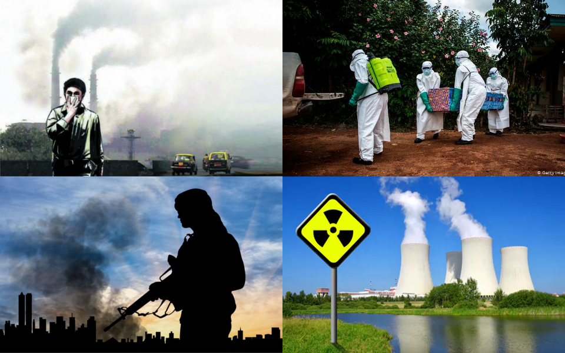
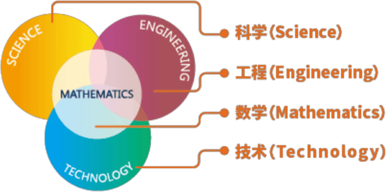
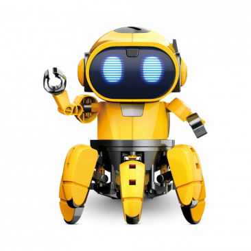
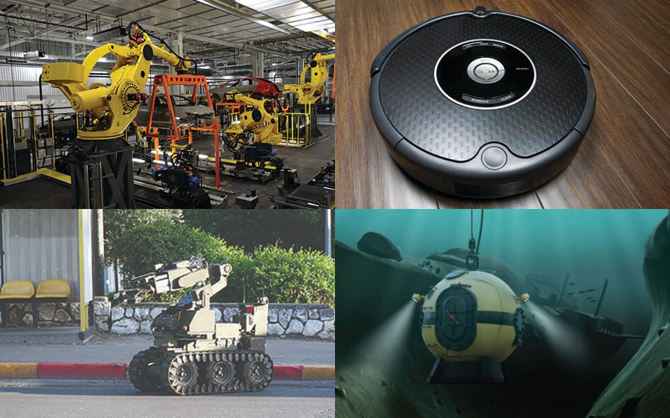

你的未来
（It's Your Future）
schedule45-90 分钟
stars初级（Beginner）
face3-5 年级
一. 人类的未来需要什么样的人才？

- 【人类面临哪些问题？】人口增长过快、环境污染、资源缺乏、新型病毒、恐怖主义、核安全等。
- 【谁去解决这些问题？】人类需要更多的科学家、工程师去改变世界，解决难题。
- 【如何培养科学家、工程师？】VEX IQ 平台通过机器人课程，培养孩子的科学思维、工程思维、创造力等。
二. 什么是 STEM？（What is STEM?）

- 【Science（科学）】探索、总结自然现象规律，形成一套知识体系。如：物理学、化学、天文学等。达尔文说：“科学就是整理事实，从中发现规律，做出结论。”
- 【Technology（技术）】是技术、技能、方法和过程的总和，用于商品、服务的生产或目标的实现。如造纸术、电子信息技术、生物技术等。
- 【Engineering（工程学）】应用科学、数学、技术等知识，设计和建造产品、建筑和结构等，来解决特定问题。如：化学工程、电气工程、机械工程等。
- 【Mathematics（数学）】研究数量、结构、空间、变化以及信息等概念的一门学科。如：代数、几何、数论等。
二. 什么是 STEM？（What is STEM?）
- 【STEM】利用工程学（Engineering）方法，应用数学（Mathmatics）和科学（Science）知识，创造技术（Technology）和解决方案（Solution），来解决现实世界中的问题。
- 【历史】20 世纪 90 年代，由美国国家科学基金会提出，旨在提高科技发展的竞争力。美国政府从利益、安全出发，藉由 STEM 教育培育人才，促进经济以及科技的发展，维持全球领先，同时提高人民的科学素养。
- 【VEX IQ 平台】通过机器人课程，来动手探索 STEM。
三. 什么是机器人学？

- 【什么是机器人学（Robotics）？】机器人学属于工程学，通过设计、建造、操作和应用机器人，来解决特定问题。
- 【什么是机器人（Robot）？】机器人是一个人造机器，能够代替人类完成特定任务，尤其是重复任务、危险任务等。
- 【机器人类型】遥控机器人（Teleoperated Robots）、自主机器人（Autonomous Robots）、混合机器人（Hybrid Robots）
四. 机器人的应用

- 【工业生产机器人】用来制造汽车、电脑等。
- 【生活服务机器人】用来扫地、拖地、修剪草坪等。
- 【警察机器人】协助警察执行危险任务，如拆炸弹、调查危险环境等。
- 【深海机器人】在海底执行任务，发现深海新物种等。
五. 课堂练习
- 【工业生产机器人】用来制造汽车、电脑等。
- 【生活服务机器人】用来扫地、拖地、修剪草坪等。
- 【警察机器人】协助警察执行危险任务，如拆炸弹、调查危险环境等。
- 【深海机器人】在海底执行任务，发现深海新物种等。
六. 创意练习
- 【工业生产机器人】用来制造汽车、电脑等。
- 【生活服务机器人】用来扫地、拖地、修剪草坪等。
- 【警察机器人】协助警察执行危险任务，如拆炸弹、调查危险环境等。
- 【深海机器人】在海底执行任务，发现深海新物种等。